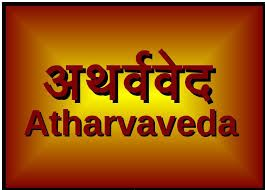

To have short introduction of Vedic Period click here
-
Rigveda :
To Download Rigveda click on image
-
The Rig Veda is the oldest of the works comprised of 10 books (known as mandalas) of 1,028 hymns of 10,600 verses.
-
These verses concern themselves with proper religious observance and practice,
based on the universal vibrations as understood by the sages who first heard them,
but also address fundamental questions regarding existence.
-
Samveda :
To Download Samveda click on image
-
The Sama Veda (“Melody Knowledge” or “Song Knowledge”) is a work of liturgical songs, chants, and texts meant to be sung.
-
The content is almost wholly derived from the Rig Veda and, as some scholars have observed,
the Rig Veda serves as the lyrics to the melodies of the Sama Veda.
-
It is comprised of 1,549 verses and divided into two sections: the gana (melodies) and the arcika (verses).
The melodies are thought to encourage dance which, combined with the words, elevates the soul.
-
Yajurveda :
To Download Yajurveda click on image
-
The Yajur Veda (“Worship Knowledge” or “Ritual Knowledge”) consists of
recitations, ritual worship formulas, mantras, and chants directly involved in worship services.
-
Like the Sama Veda, its content derives from the Rig Veda but the focus of its 1,875 verses is on the liturgy of religious observances.
-
It is generally regarded as having two “sections” which are not distinct parts but characteristics of the whole.
-
The “dark Yajur Veda” refers to those parts which are unclear and poorly arranged
while the “light Yajur Veda” applies to the verses which are clearer and better arranged.
-
Atharvaveda :

To Download Atharvaveda click on image
-
The Atharva Veda (“knowledge of Atharvan”) differs significantly from the first three
in that it concerns itself with magical spells to ward off evil spirits or danger, chants, hymns, prayers, initiation rituals, marriage and funeral ceremonies, and observations on daily life.
-
The name is thought to derive from the priest Atharvan who allegedly was well-known as a healer and religious innovator.
-
It is thought that the work was composed by an individual (possibly Atharvan but not likely) or individuals about the same time as the Sama Veda and Yajur Veda (c. 1200-1000 BCE).
It is comprised of 20 books of 730 hymns some of which draw on the Rig Veda.
-
The nature of the work, the language used, and the form it takes has caused some theologians and scholars to reject it as an authentic Veda.
In the present day, it is accepted by some but not all Hindu sects on the grounds that it deals with later knowledge which is remembered, not the primordial knowledge that was heard.
If you are interested in knowing Ancient Wisdom,Create account by filling following form
Mark obtained in Vedic Gurukul
| Name of Scripture |
Years took to Learn |
Marks |
| Rigveda |
3 |
91 |
| Samveda |
2 |
85 |
| Yajurveda |
2.5 |
89 |
| Atharvaveda |
3 |
93 |
| Vedant Darshan |
1.5 |
96 |
Spiritual and Psychological
html page contain reference link for VedPuran and Interpretation of Dreams with examples of basic HTML tags.